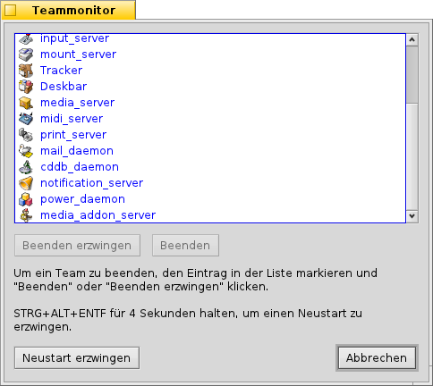

Team Monitor
STRG ALT ENTF ruft den Team Monitor auf, der alle momentan laufenden Programme auflistet.
Programme, die vom System gestartet wurden sind blau, die vom Benutzer schwarz.
Rote Anwendungen reagieren nicht mehr; oft ein Zeichen, dass sie abgestürzt sind. Mit (oder enntweder ENTF oder Q lässt sich eine aus der Liste gewählte Anwendung beenden. Funktioniert das nicht, kann man (oder SHIFT ENTF oder K) versuchen.
OPT ALT T ruft ein Terminal auf.
Falls Tracker oder Deskbar abgestürzt oder eingefroren sind, erscheint ein weiterer Button (manchmal muss dazu das hängende Team erst gekillt werden): startet Tracker und/oder Deskbar neu.